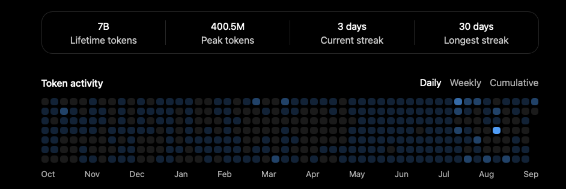

Work logs.
A record of the work, one change at a time.
Token activity
Screenshot ·

Development archive
Selected changes from public projects. Exported 9 Mar 2026.
A record of the work, one change at a time.
Screenshot ·

Selected changes from public projects. Exported 9 Mar 2026.